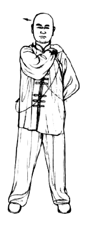
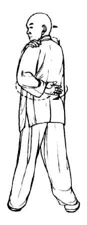
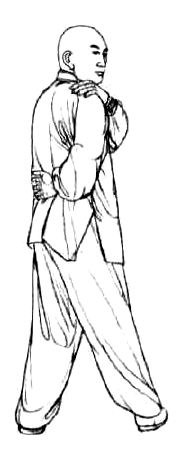

Standing Torso-Turn Tu-Na
站势扭身吐纳法
1 / 2
Figures 12–12
Follow each panel left to right.
▲ inhale
▼ exhale
◆ voiced release
A slow alternating turn. Practise an equal number to each side.
Inhale left
deep · through the nose
Stand a little wider than shoulder-width. Put the
left palm at the low back
and the
right hand on the left shoulder
; turn left and look behind.
12

▲
→
11

Exhale
long · empty fully
Rotate the torso slowly back to face forward, completing the exhale as you arrive.
11
▼
→
12
Standing Torso-Turn Tu-Na
站势扭身吐纳法
2 / 2
Figures 12–12
Inhale right
deep · through the nose
Switch the hands and turn to the right. Look behind without collapsing the posture.
12
▲
→
13

Return
long · then repeat
Come back to the front slowly. Continue for several balanced turns to both sides.
13
▼
→
12